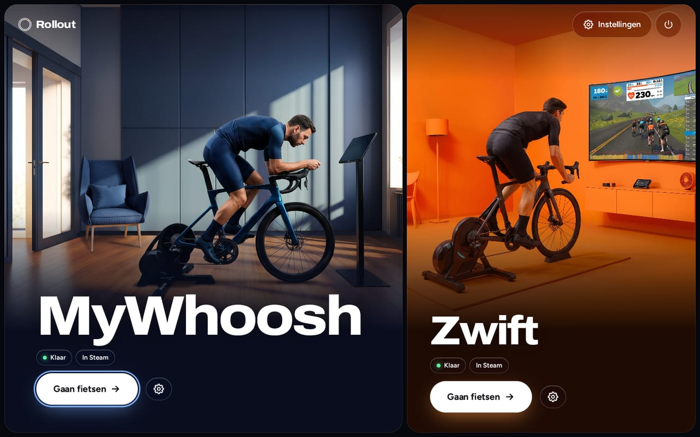
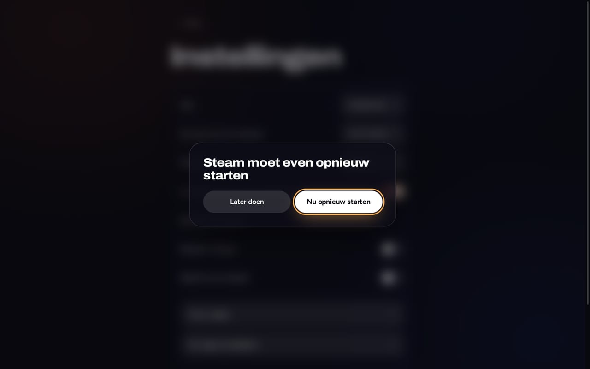

MyWhoosh
Directe Bluetooth- Trainer en hartslagband via Bluetooth, gekoppeld in het spel zoals op Windows
- Draait met GE-Proton, voor je gedownload en gecontroleerd
Rollout installeert, updatet en start je indoor-fietsapps. Downloaden, dubbelklikken, fietsen, alles met de controller.
Bèta: getest op ROG Ally met Bazzite. Steam Deck nog niet gecontroleerd.

Elke app krijgt de opzet die op Linux het beste werkt. Rollout kiest die voor je.
Elk scherm werkt met gamepad, aanraking en toetsenbord. Menu’s en lijsten zijn van Rollout zelf, dus ze werken in de Gamemodus, waar native pop-ups het laten afweten.
Geen verplichte vragen, geen terminal, geen sudo. Rollout toont grootte en tijd vooraf, daarna duidelijke fasen met voortgang.
Rollout kan zichzelf op de achtergrond updaten. Elke launcher-update is ondertekend en wordt als proef gestart; mislukt dat, dan gaat Rollout zelf terug naar de laatste goede versie.
Eén schakelaar zet Rollout en je apps met afbeeldingen in Steam. Start ritten direct vanuit de Gamemodus; speeltijd blijft bij updates behouden.

Bij MyWhoosh laat de Bluetooth-controle zien welke trainers en hartslagbanden zenden voordat je instapt, en start een vastgelopen adapter opnieuw.
Gaat er iets mis, dan zegt Rollout in gewone woorden wat je daarna moet doen, met één knop om het opnieuw te proberen. Details alleen als je ze wilt.
Achter “Geavanceerd”: Proton-versie, beeldscherm-uitvoer, Bluetooth-adapter, updatekanaal, logboeken en diagnose. Elke optie toont de aanbevolen waarde.
Kies je systeem, download Rollout en open het in de Desktopmodus. Geen terminal nodig.
Bèta: getest op ROG Ally met Bazzite. Steam Deck nog niet gecontroleerd.
Download volgt binnenkort.
Zwift heeft daarnaast Podman of Docker nodig, dat SteamOS meestal niet meelevert. MyWhoosh heeft geen van beide nodig.
Download volgt binnenkort.
Podman zit erbij, en Zwift heeft het nodig. Bazzite met GNOME: gedownloade .desktop-bestanden starten daar niet met een dubbelklik, dus deze installatie werkt op die editie nog niet. Gebruik de KDE-editie.
Andere Linux-distributies: niet ondersteund, op eigen risico. Zie GitHub.
Rollout past geen spellen aan. Het stuurt open projecten aan die het zware werk al doen.
Scripts van de projecten zijn vastgezet op een exacte commit en gecontroleerd met SHA-256. Launcher-updates zijn ondertekend met Ed25519.
Rollout staat in ~/.local/share/rollout. Installeren vraagt geen root en wijzigt geen systeempakketten op SteamOS of Bazzite.
Zwift heeft in zijn container geen directe Bluetooth, en geen van beide spellen wordt officieel ondersteund op Linux. Rollout zegt dat, in plaats van het te verbergen.
Op Bazzite wel: Zwift draait in een container op basis van netbrain/zwift, die Rollout installeert en start. Rollout is getest op een ROG Ally met Bazzite; de Steam Deck is nog niet gecontroleerd. Op SteamOS ontbreekt meestal eerst Podman of Docker. Sensoren verbinden via Zwift Companion op je telefoon of Direct Connect, niet rechtstreeks via Bluetooth.
Ja. MyWhoosh draait met GE-Proton en praat rechtstreeks via Bluetooth met je trainer en hartslagband. Je koppelt ze in het spel, zoals op Windows.
Ja, onder Bazzite. Installeer Rollout in de Desktopmodus en start Zwift daarna vanuit Rollout of vanuit Steam in de Gamemodus. Je controller bestuurt het spel.
Nee. Download Rollout.desktop, dubbelklik erop in de Desktopmodus en bevestig één keer. Daarna staat Rollout in je appmenu.
Ja. Rollout werkt met gamepad, aanraking en toetsenbord. In de Gamemodus bestuurt je controller ook Zwift.
Rollout zoekt op de achtergrond naar nieuwe versies en installeert ze automatisch als je dat wilt. Launcher-updates zijn ondertekend, en een kapotte update wordt zelf teruggedraaid.
Nee. Rollout is een onafhankelijk project en niet verbonden met Zwift, Inc., MyWhoosh of Valve. Hun voorwaarden beperken niet-goedgekeurde tools van derden, en zij kunnen accounts naar eigen inzicht blokkeren. Lees de voorwaarden en beslis zelf.
Rollout zit in de bèta. Het is getest op een ROG Ally met Bazzite. SteamOS op de Steam Deck is het tweede doel, maar nog niet gecontroleerd. Andere Linux-distributies op eigen risico.